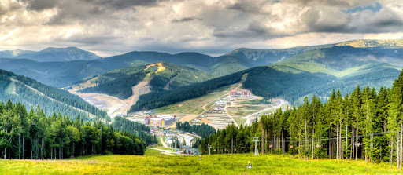
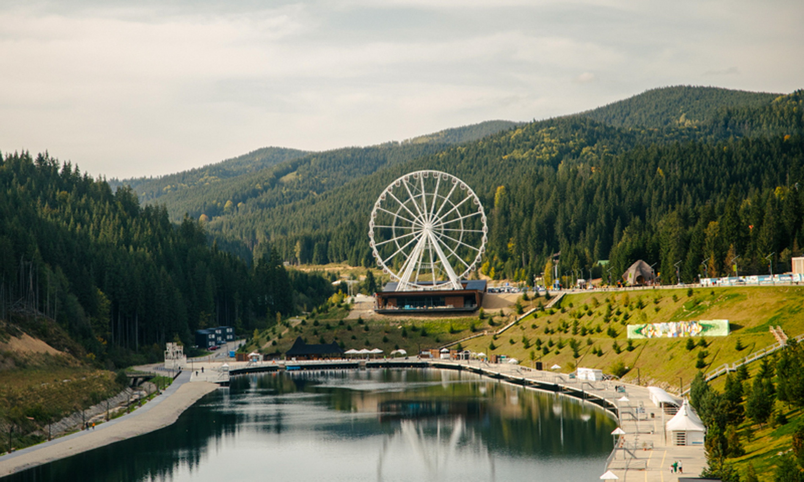

Чи вимикають світло на Буковелі?
Щотижня під повідомленням про графіки погодинних вимкнень хтось таки згадає про Буковель. Мовляв, ану чи у у багатій туристичній провінції все, як у людей. Відповідь на це питання раніше давали фахівці “Прикарпаттяобленерго”. Але Інформатор попрохав друга редакції зловити у кадр, що робиться на курорті під час вимкнень.
Буковель за вказівками АТ «Прикарпаттяобленерго» проводить обмеження, які підприємство контролює засобами телевимірювання. Це один з найдисциплінованіших споживачів, що чітко виконує розпорядження. Окрім цього, Буковель на 100% забезпечений власними джерелами резервного живлення та має генератори великої потужності, що застосовує у час ГПВ.
